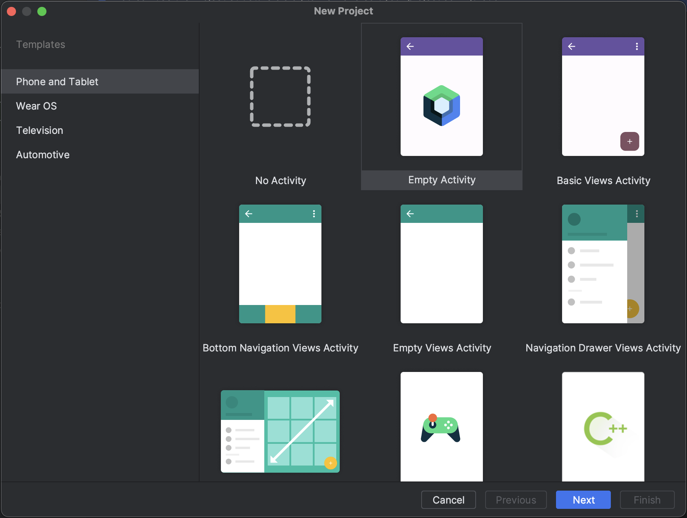
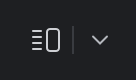
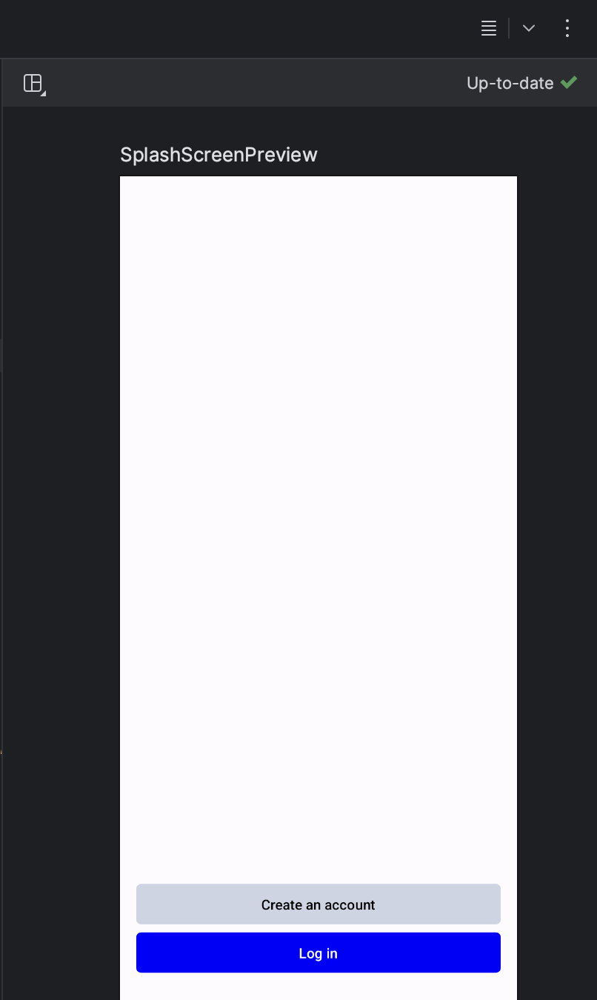
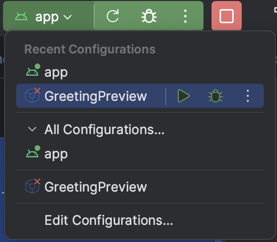
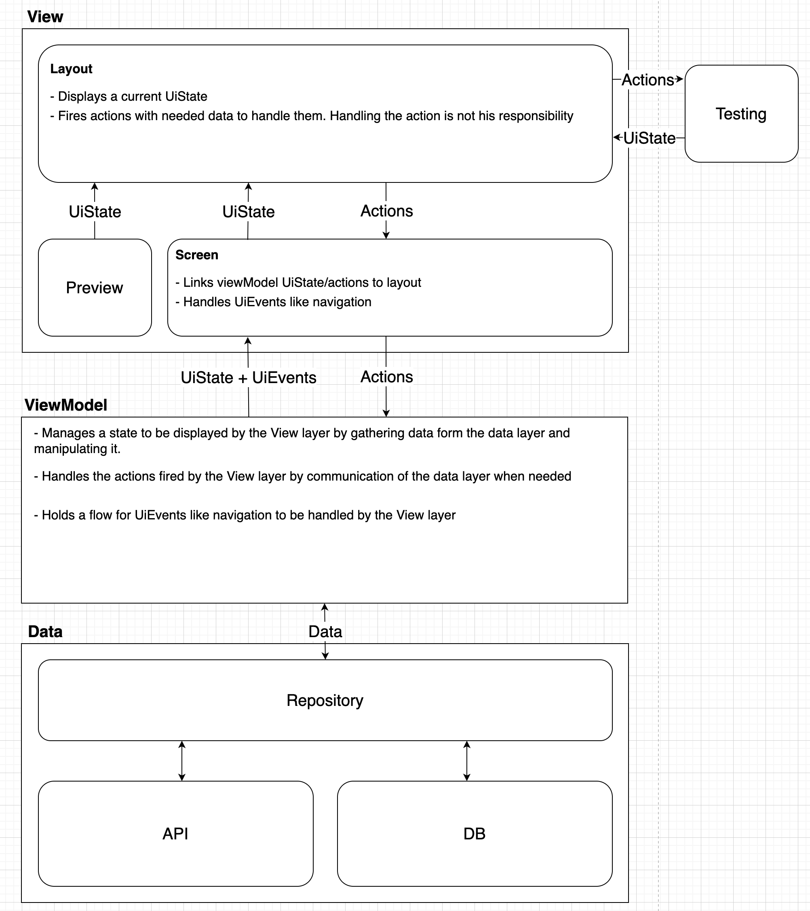

Hello fellow developer! Welcome to Wisemen, we are happy to have you on board! We want to make sure you are soon up to speed with the core of Android development and our way of working. Therefore we created this awesome series of CodeLabs for you. These are a constant work in progress, so please let us know if you have any feedback or suggestions! This is what you will learn in this CodeLab:
1. Creating a new project with our Android Core Library
We have our own Android Core Library that we use in all our projects. This library contains a lot of useful classes and functions that we use in all our projects.
2. Folder structure
We have a specific folder structure that we use in all our projects. This is to make sure that we can easily find all the files we need.
3. AGILE
- Work with Jira
- Using Bitbucket for version control
- Branching strategy
- Pull Requests
4. Creating your first app
You will be creating a simple To-Do app. This app will have a few features that are written out in Jira.
We are currently in a transition phase from XML to Jetpack Compose. Therefore we will be using Jetpack Compose for this app. Jetpack Compose is a new way of writing UI for Android apps in a more declarative way. You can find more information about Jetpack Compose here. Our Legacy projects are still written in XML, but as time comes you'll get to learn that as well! Our new projects are written in Jetpack Compose, therefore we will be using that for this Wiselab.
Let's get started!

Before we start, make sure you have everything you need to complete this WiseLab. You will need:
Android Studio
Download the IDE here if you don't have it already! Android Studio
Figma
Our designers work with Figma. You can download it here:
To access the designs you need to log in with your Wisemen account:
GitHub Repository
- You can find the link to your repo on your personal Confluence page.
Jira access
ToDo: Add link to Jira
3.1 Create a new project
Open Android Studio and create a new Compose project. You can name it Wiselab_Android_«Name».

Make sure your package name is: **com.wiselab.wiselab_android_«name»**
3.2 Link your project to GitHub
You can find the link to your repo on your personal Confluence page.

Use the terminal or IDE to link your project to BitBucket
We recommend to use a GIT GUI like SourceTree or Fork. As backup we will show you how to work with the terminal. If you prefer to work with the IDE, you can find the instructions here.
- Open the terminal in Android Studio (bottom left corner)
- add remote origin to project
git init git remote add origin <your repo url>
From here on you can choose to use the terminal or the IDE to work with Git.
3.3 Our Branching strategy
We use the Gitflow branching strategy. You can find more information about this strategy here.
- develop branch: this branch contains the latest development changes
- QA branch: this branch is used to test the features before they are merged into the staging branch
- staging branch: this branch is used send to the client for testing
- master branch: this branch contains the latest release of the app
- feature/... branches: these branches are used to develop new features for the upcoming release and are only pushed to develop
- bugfix/... branches: these branches are used to fix bugs in the app and are only pushed to develop
Make sure you have created all 4 ‘standard' branches. You can do this by either using the terminal, IDE or a GUI tool like SourceTree or Fork.
Now checkout the develop branch and create a new feature branch called feature/setup-project.
Now that you have created your project, it's time to add our Android Core Library! This library contains a lot of useful classes and functions that we use in all our projects. The latest version is also noted in the readme.
4.1 Open the build.gradle file of your project
- Add the following plugins to the top of the file:
- Be sure to check for the latest versions on the links above the plugins!
- This is needed to use the Room dependency for our local database
plugins {
// https://mvnrepository.com/artifact/com.android.application/com.android.application.gradle.plugin?repo=google
id("com.android.application") version "<<version>>" apply false
// https://plugins.gradle.org/plugin/org.jetbrains.kotlin.android
id("org.jetbrains.kotlin.android") version "<<version>>" apply false
//https://github.com/google/ksp/releases
id("com.google.devtools.ksp") version "<<version>>" apply false
}
4.2 Open the settings.gradle file of your project
- Under the repositories tag in the dependencyResolutionManagement block, add the following:
repositories {
google()
mavenCentral()
maven("maven.google.com")
maven("https://maven.fabric.io/public")
maven("https://jitpack.io")
maven("https://plugins.gradle.org/m2/")
}
4.3 Open the build.gradle file of your app
- Make sure you have following plugins
plugins {
id("com.android.application")
id("org.jetbrains.kotlin.android")
id("com.google.devtools.ksp")
}
- Add the following dependencies. The versions can be found in the url above the dependencies.
//Appwise core dependencies
//https://jitpack.io/#appwise-labs/AndroidCore
implementation("com.github.appwise-labs.AndroidCore:core:<<version>>")
implementation("com.github.appwise-labs.AndroidCore:room:<<version>>")
implementation("com.github.appwise-labs.AndroidCore:networking:<<version>>")
//Room
//https://developer.android.com/jetpack/androidx/releases/room
implementation("androidx.room:room-runtime:<<version>>")
ksp("androidx.room:room-compiler:<<version>>")
//Koin for dependency injection
//https://insert-koin.io/docs/setup/koin/
implementation("io.insert-koin:koin-core:<<version>>")
implementation("io.insert-koin:koin-android:<<version>>")
implementation("io.insert-koin:koin-androidx-compose:<<version>>")
//Compose navigation
//https://github.com/raamcosta/compose-destinations
implementation("io.github.raamcosta.compose-destinations:animations-core:<<version>>")
ksp("io.github.raamcosta.compose-destinations:ksp:<<version>>")
Now you can sync your project and you're ready to go! 🚀 If you have any more questions about the Android Core Library, you can find more information on the link above.
Don't forget to push these changes to your feature/setup-project branch with a clear commit message.
It's time to set some last few things before we can start coding!
In case you forgot: Figma wireframes
5.1 App class
Let's start by creating the App class. This is the first class that is called when the app starts. We will use this class to set up our dependency injection and navigation in the future. Create a new class in the main package called App and add the following code:
class App : Application() {
companion object {
lateinit var instance: App
private set
fun isProxymanEnabled() = BuildConfig.DEBUG && BuildConfig.BUILD_TYPE != "release"
}
override fun onCreate() {
super.onCreate()
instance = this
}
}
Let's explain this bit of code. The App class extends the Application class. This is the first class that is called when the app starts. We use the companion object to create a singleton of the App class. This way we can access the App class from anywhere in the app. We also use this class to check if we are in debug mode and if we are not in release mode. This is used to enable the Proxyman interceptor for debugging purposes. The instance of the App class is set in the onCreate function.
5.1.1 Init Core
- Create a new private function called initCore to set up the Android Core Library. This function will be called in the onCreate function.
- Add the following code to the initCore function:
CoreApp.init(this)
.apply {
if (BuildConfig.DEBUG) {
initializeErrorActivity(true)
}
}
.initializeLogger(getString(R.string.app_name), BuildConfig.DEBUG)
.build()
This code initializes the Android Core Library. We also initialize the error activity and the logger. The logger is used to log messages to the console. The error activity is used to show errors in the app. This is only enabled in debug mode.
- Don't forget to add the initCore function to the onCreate function.
11.1.2 Init Koin
Koin is our dependency injection library. We use this library to inject our viewmodels and repositories in our composables. This way we can easily test our code.
Create a new package called com.wiselab.«name».data.di. This is where we will put all our dependency injection related classes.
- Create a new file called AppModule with following code:
- We will add to this in the future when we need to inject more dependencies.
val appModule = module { }
Here we create a module that will be used to inject our dependencies. We create a single instance of our database here.
- In the App class: create a new private function called initKoin to set up Koin. This function will be called in the onCreate function.
- Add the following code to the initKoin function:
startKoin {
androidLogger(Level.DEBUG)
//this is so when you want to inject app context this determines where to get it
androidContext(this@App)
modules(appModule)
}
Here we initialize Koin and add the appModule we created earlier.
5.2 Theme
- Go to the figma file under the colors tab and place the colors in the Color.kt file in the theme package. Place these colors in an Object.
- Change the colors of the LightColorScheme in the theme.kt file, delete the DarkColorScheme because we are not going to implement a dark theme.
- Check the Material3 guidelines for the key colors and Color roles.
- Change the Theme-function to the most basic version like this:
@Composable
fun AppTheme(
content: @Composable () -> Unit
) {
val colors = LightColorScheme
MaterialTheme(
colorScheme = colors,
content = content
)
}
5.3 TextStyles
- Add an object-file named TextStyles to preset our different text styles. 🔤
- Use the Material3 guidelines for the different text styles.
- Create the following styles in this file:
- HeadlineLarge
- HeadlineMedium
- HeadlineSmall
- Subtitle
- LabelLarge
- LabelSmall
- BodyLarge
- BodySmall
- Button
- Let's create the first style together: Look at the figma design for the largest headline: "Mijn to do's". Click on it until it is the only component selected. You can see the text style in the right panel. Use these values to create the HeadlineLarge style:
object TextStyles {
val headlineLarge = TextStyle(
fontSize = 34.sp,
fontWeight = FontWeight.W700,
lineHeight = 41.sp,
letterSpacing = 0.37.sp
)
}
- Note that we use the Sp unit for the font size, line height and letter spacing. This is because we want to use the Sp unit for all our text styles. This way the text will scale with the system font size. Don't mind the fontFamily, SF Pro Display is the default font on iOS. The color is not needed because we will set the color in the theme.
5.4 Spacing
- Add an object-file named Spacing to preset our different spacing values. 📏
- Use the Material3 guidelines for the different spacing values.
- Use this as a reference for the different spacing values:
package com.wiselab.onboarding_compose.ui.theme
import androidx.compose.material3.MaterialTheme
import androidx.compose.runtime.Composable
import androidx.compose.runtime.ReadOnlyComposable
import androidx.compose.runtime.compositionLocalOf
import androidx.compose.ui.unit.Dp
import androidx.compose.ui.unit.dp
object Spacing {
val default: Dp = 0.dp
val extraSmall: Dp = 4.dp
val small: Dp = 8.dp
val medium: Dp = 16.dp
val large: Dp = 24.dp
val extraLarge: Dp = 40.dp
val huge: Dp = 64.dp
}
5.5 Check your first preview
- Go to the MainActivity.kt file and check for errors.
- Change the previous theme name to the new AppTheme name and clear the imports
5.5.1 Add a virtual or physical device
If you don't have a virtual or physical device, you can create one by following these steps: 📱
Physical device
- Go to your phone settings and enable Developer options. If you don't know how to do this, you can find more information here.
- Connect you phone to your computer with either USB or Wireless debugging. You can find more information here.
Virtual device
- Go to the AVD Manager in Android Studio and create a new virtual device. You can find more information here.
5.3.2 Run the preview
In the MainActivity.kt file, click on the Preview button next to the GreetingPreview function. This will open a preview of your app in the IDE. If you have a virtual or physical device connected, you can also run the app on your device.

Now you can push your changes to your feature/setup-project branch with a clear commit message and create a pull request to merge your branch into the develop branch. Don't forget to add your buddy as a reviewer! 🕵️
We want to work as efficient as possible. Therefore we use the Agile way of working. We created our custom Agile Bible where we describe how we work the Agile way.
6.1 Agile Bible
The Agile Bible contains all the information you need to know about how we work the Agile way. (Work in Progress) Take your time to read it and ask questions if you have any.
Some key subjects:
- The Agile Manifesto
- Scrum Cycles
- User Stories
Start creating some UI components and a screen to show them on. Starting with the landing screen where we can register or log in. We always name our branches to the Jira ticket. The first ticket we will work on is OB-1. Create a new branch called feature/ob-1--landing-screen
- Drag the Jira ticket to the In Development column.
7.1 Create some buttons
- Open the figma file and check the components used page. This is where you can find all the components used in the design.
- Create a new package called shared. The full path should be com.wiselab.«name».ui.shared.
- Create a new Kotlin file named Buttons in the Shared package to create our different buttons
- Create the following buttons:
- PrimaryButton
- SecondaryButton
- TertiaryButton
- OutlinedButton
- Show a preview of the buttons like this:

Note that you can see the preview when clicking on the  button in the top right corner of the IDE.
- Here's a bit of code to get you going:
@Preview
@Composable
fun ButtonsPreview() {
AppTheme {
Column(
modifier = Modifier
.fillMaxWidth()
.background(MaterialTheme.colorScheme.background)
.padding(Spacing.medium),
verticalArrangement = Arrangement.spacedBy(Spacing.medium)
) {
Buttons.Primary(
text = "Primary",
Modifier.fillMaxWidth()
) {}
}
}
}
object Buttons {
@Composable
fun Primary(
text: String,
modifier: Modifier = Modifier,
onClick: () -> Unit
) {
Button(
modifier = modifier,
shape = RoundedCornerShape(5.dp),
colors = ButtonDefaults.buttonColors(
containerColor = Color.PeriWinkel,
contentColor = Color.Black
),
onClick = onClick
) {
Text(text = text)
}
}
}
- Let's explain what's going on here:
first off we create the object Buttons. This is a container for all our buttons. We do this so we can easily find all our buttons in the project. Then we create a composable function for each button. This way we can easily reuse the buttons in our project. The Primary Button has 3 parameters:
- text: String
- modifier: Modifier
- onClick: () -> Unit
The text and onClick parameters speak for themselves. The modifier is a bit more complicated. It's a way to add styling to our button like positioning, padding etc..., but more about this later.
- Next the preview is created, we always place these above the object:
Make sure to check the modifiers we use here. The fillMaxWidth modifier makes sure the button takes up the full width of the screen. The background modifier makes sure the background color is the same as the background color of the app. The padding modifier makes sure there is some space between the buttons. The verticalArrangement makes sure the buttons are spaced out vertically.
- Now create the other buttons and show them in the preview.
- Hint for the disabled state: Check the opacity/alpha value in Figma and use
Color.SanJuan.copy(alpha = ...). - Commits linked to Jira tickets should always contain the ticket number. In this case OB-1. The commit message should look something like this: OB-1: Create button components.
7.2 Create a screen
The task manager is seen as 2 Epics, onboarding and todo's. create a new package com.wiselab.«name».feature. Also create a new package called onboarding in the feature package. The full path should be com.wiselab.«name».feature.onboarding. In this package create a new package called landing for the landing screen. The full path should be com.wiselab.«name».feature.onboarding.landing.
- Create a new Kotlin file called LandingScreen in the landing package.
- We like to split up our screens in minimal 3 parts, we go in more detail about this in a future section. For now
- Layout: this is where we place all the content of the screen
- Screen: this is where we link our data and state to the layout
- Preview: this is where we show the layout in a preview
- This is also the order we create them in. Note that this is not the order in the file. We always place the preview above the screen and the screen above the layout.
- This is the preview we are working towards:

7.2.1 Create the Layout
- Create a composable function called LandingLayout. This is where we place all the content of the screen.
- Because there are 2 buttons vertically aligned we will be using the Column Composable as previously explained.
- The function will look something like this:
@Composable
fun LandingLayout() {
Scaffold {
Column(
modifier = Modifier
.fillMaxWidth()
.wrapContentHeight()
.padding(horizontal = Spacing.medium)
) {
Buttons.Primary(text = "Create an account", Modifier.fillMaxWidth()) {}
Buttons.Secondary(
text = "Log in",
Modifier
.fillMaxWidth()
.padding(bottom = 58.dp)
) {}
}
}
}
We use the fillMaxWidth modifier to make sure the buttons take up the full width of the screen. We use the wrapContentHeight modifier to make sure the column is only as high as it's content. We use the padding modifier to add some space between the buttons and the edge of the screen. and padding under the secondary button.
Some explanation about Scaffold : The Scaffold is a Composable that implements the basic material design visual layout. It has a top bar, bottom bar and a floating action button. We will be using this a lot in our projects. It is like a structured container for our screen. At This moment the Scaffold is still experimental, that's why we need to add the @OptIn(ExperimentalMaterial3Api::class)
7.2.2 Scaffold Padding
- There is still an issue. The Scaffold must always pass a padding value to it's content. This is because the Scaffold has a top bar, bottom bar and a floating action button. We need to make sure the content is not hidden behind these.
- We can fix it like this:
@Composable
fun LandingLayout() {
Scaffold { contentPadding ->
Column(
modifier = Modifier
.fillMaxWidth()
.wrapContentHeight()
.padding(contentPadding)
.padding(horizontal = Spacing.medium)
) {
Buttons.Primary(text = "Create an account", Modifier.fillMaxWidth()) {}
Buttons.Secondary(
text = "Log in",
Modifier
.fillMaxWidth()
.padding(bottom = 58.dp)
) {}
}
}
}
Note that the Scaffold padding is always the first padding that is applied. A modifier is always applied from top to bottom.
7.2.3 Create the screen
- Now create the LandingScreen composable. This is where we place the layout in a screen, this is the parent.
- Here is where we will link our data to our view. We will explain this in a future section.
- For now we will just call our LandingLayout function.
- The function will look something like this:
@OptIn(ExperimentalMaterial3Api::class)
@Composable
fun LandingScreen() {
LandingLayout()
}
7.2.4 Create the preview
- Now create the LandingScreenPreview composable. This is where we show the screen in a preview. If you forgot how to create a preview, check the ButtonsPreview.
- As you will see the buttons are not yet aligned at the bottom. We can fix this by adding a Spacer above the buttons like this:
@Composable
fun LandingLayout() {
Scaffold { contentPadding ->
Column(
modifier = Modifier
.fillMaxWidth()
.wrapContentHeight()
.padding(contentPadding)
.padding(horizontal = Spacing.medium)
) {
Spacer(modifier = Modifier.weight(1f))
Buttons.Primary(text = "Create an account", Modifier.fillMaxWidth()) {}
Buttons.Secondary(
text = "Log in",
Modifier
.fillMaxWidth()
.padding(bottom = 58.dp)
) {}
}
}
}
The spacer will take up all the available space and push the buttons to the bottom. The ** weight** modifier is used to make sure the spacer takes up all the available space.
7.2.5 String extraction
- There is still 1 bad practise. Strings should never be hardcoded. We should always use a string resource. We can fix this by adding a string resource to the strings.xml file. The easiest way to do this is to right click on the string and select Show Context Actions and then Extract string resource. Do this for both buttons.
- Use command + click (or windows + click) on the string to navigate to the string resources. Here you can change, add, delete and even translate strings.
- Don't forget to commit your changes with a proper commit message!
Let's add navigation to our app. We will use the raamcosta compose destinations library for this. This library is a wrapper around the navigation component. It makes it easier to use the navigation component with compose. It also adds some nice features like animations and deep linking. We already added the dependency in the setup of the project.
8.1 Setup navigation
- Create a new package called navigation in the onboarding package like this: com.wiselab.«name».onboarding.navigation
- Make a new file called OnboardingNavGraph in the navigation package.
- Add following code to the file:
import com.ramcosta.composedestinations.annotation.NavGraph
import com.ramcosta.composedestinations.annotation.RootNavGraph
@RootNavGraph(start = true)
@NavGraph
annotation class OnboardingNavGraph(
val start: Boolean = false
)
- This is a NavGraph. It's a class that contains all the destinations of a navigation graph. The @RootNavGraph annotation tells the library that this is the root of the navigation graph. The @NavGraph annotation tells the library that this is a navigation graph. The start parameter tells the library that this is the start of the navigation graph. This means that this is the first screen that will be shown when the app starts.
- Open the LandingScreen file and add the 2 annotations to the LandingScreen composable function:
@Destinationand@OnboardingNavGraph(start = true) - The @Destination annotation tells the library that this is a destination. The @OnboardingNavGraph(start = true) annotation tells the library that this is the start of the navigation graph. This means that this is the first screen that will be shown when the app starts.
8.2 Integrate in the MainActivity
- Open the MainActivity file and remove the Greeting composable function with it's preview.
- Change the class so it looks like this:
class MainActivity : ComponentActivity() {
@OptIn(ExperimentalMaterial3Api::class)
override fun onCreate(savedInstanceState: Bundle?) {
super.onCreate(savedInstanceState)
setContent {
AppTheme {
val navController = rememberNavController()
Scaffold { paddingValues ->
Box(
modifier = Modifier
.fillMaxSize()
.background(MaterialTheme.colorScheme.background)
.padding(paddingValues)
) {
DestinationsNavHost(
navGraph = NavGraphs.onboarding,
navController = navController
)
}
}
}
}
}
}
- We use the Scaffold composable to create a basic material design visual layout. We will be using this a lot in our projects.
- The Box composable is a container that can contain multiple composable functions. We use it to place the DestinationsNavHost composable in it.
- The DestinationsNavHost composable is a composable function from the destinations library. It's a wrapper around the navigation component. It takes a navGraph and a navController as parameters. The navGraph is the navigation graph we created in the previous step. The navController is a controller that controls the navigation between the screens. We will use this later to navigate between screens.
8.3 Run your app
In the top right of your IDE you can select the device you want to run your app on. Select a device and run the app configuration. If you can't find it, try clicking the arrow down to see all configurations like this:

You should see the landing screen now! 🙌🏻 Don't forget to commit an push your changes with a proper commit message including the ticket number!
8.4 Time for a PR
- Create a pull request from your feature branch to the develop branch.
- Add your buddy as a reviewer.
- Drag your ticket in Jira from In Development to Pull Request. 🚀
Now that you know how to make your first screen, we can start working with states. To work with states we first need to understand how Composable functions work.
9.1 Composition and recomposition
A basic Composable function with no parameters will never change how it is drawn. This implies that the view is never redrawn, unless the parent Composable function is redrawn. When a Composable function is redrawn, it is called recomposition. One way to trigger recomposition is triggered is when a Composable function is called with different parameters. For instance if we have a Composable function that takes a String as a parameter, and we call it with the String "Hello World", and then we call it again with the String "Hello Wisemen", the Composable function will be recomposed. If we want to trigger recomposition without changing the parameters, to add increased functionality, we need to use state.
9.2 State
A State is a way to store data in a Composable function. When the state changes, the Composable function is recomposed. A basic way to create a state is:
var state by remember { mutableStateOf("Hello World") }
Here we created a state that holds a String. The state is initialized with the value "Hello World". The state is mutable, which triggers recomposition of the views using this value as parameter. The remember function is used to make sure the state is not recreated every time the Composable function is recomposed. This is important because if the state is recreated, the value is reset to the initial value.
9.3 TextField
The best way to learn how to work with states is to work with a TextField. Like we did for the buttons, we will create a new file called ** EditText.kt**. Here you can create your basic edit texts that can be reused in the future. Create a basic EditText like this:
@Composable
fun EditText(
modifier: Modifier = Modifier
) {
var input = ""
TextField(
value = input,
onValueChange = { input = it },
modifier = modifier
)
}
When you run this preview and try to type in this textField, you see that nothing happens. This is because the parameters of the EditText are never changed and the composable function is not smart enough to know that the input variable is changed. To fix this we need to use state. Change the EditText to this:
@Composable
fun EditText(
modifier: Modifier = Modifier
) {
var input by remember { mutableStateOf("") }
TextField(
value = input,
onValueChange = { input = it },
modifier = modifier
)
}
Now when you run the preview and type in the TextField, you see that the text is updated. This is because the state is changed and the Composable function is recomposed. IT LIVES 🎉
9.4 Stateless first and state hoisting
When working with states, it is important to keep your Composable functions stateless as much as possible. As mentioned earlier, a Composable function is recomposed when the state changes. If your UI gets more complex, and you use more function hierarchies with all their different states, it can become hard to keep track of all the states. And also it can lead to unwanted recompositions an because of that a bad performance. This also breaks the "single source of responsibility" principle which can lead to bug-prone code. To prevent this, we can use state hoisting. State hoisting is a way to move the state to the parent Composable function.
Let's improve our EditText with state hoisting so it follows this principle.
@Composable
fun EditText(
modifier: Modifier = Modifier,
input: String,
onInputChanged: (String) -> Unit
) {
TextField(
value = input,
onValueChange = onInputChanged,
modifier = modifier
)
}
@Composable
fun ComposableUsingEditText() {
var input by remember { mutableStateOf("") }
EditText(
input = input,
onInputChanged = { input = it }
)
}
Now the EditText is stateless and the state is hoisted to the parent Composable function. If you do this for all your Composable functions, you will have a better performance and bugs will be easier to find.
9.5. Exercise: Finishing the component library
Now that you know how to style your Composables and how to work with states, you can finish the component library.
Keep these principles in mind:
- Make sure to create a new file for every type of component you create. This way you can reuse them in the future and you don't have to restyle them every time.
- Remember to add the modifier parameter to your custom views so they are easier to lay out in the future.
- Make sure to use state hoisting when working with states.
- Use previews to test your components handling of different states.
After you are finished, make a new PR and ask your buddy to review it. 🚀
Now that you know how to make your first screen, we can start working with states. To work with states we first need to understand how Composable functions work.
9.1 Composition and recomposition
A basic Composable function with no parameters will never change how it is drawn. This implies that the view is never redrawn, unless the parent Composable function is redrawn. When a Composable function is redrawn, it is called recomposition. One way to trigger recomposition is triggered is when a Composable function is called with different parameters. For instance if we have a Composable function that takes a String as a parameter, and we call it with the String "Hello World", and then we call it again with the String "Hello Wisemen", the Composable function will be recomposed. If we want to trigger recomposition without changing the parameters, to add increased functionality, we need to use state.
9.2 State
A State is a way to store data in a Composable function. When the state changes, the Composable function is recomposed. A basic way to create a state is:
var state by remember { mutableStateOf("Hello World") }
Here we created a state that holds a String. The state is initialized with the value "Hello World". The state is mutable, which triggers recomposition of the views using this value as parameter. The remember function is used to make sure the state is not recreated every time the Composable function is recomposed. This is important because if the state is recreated, the value is reset to the initial value.
9.3 TextField
The best way to learn how to work with states is to work with a TextField. Like we did for the buttons, we will create a new file called ** EditText.kt**. Here you can create your basic edit texts that can be reused in the future. Create a basic EditText like this:
@Composable
fun EditText(
modifier: Modifier = Modifier
) {
var input = ""
TextField(
value = input,
onValueChange = { input = it },
modifier = modifier
)
}
When you run this preview and try to type in this textField, you see that nothing happens. This is because the parameters of the EditText are never changed and the composable function is not smart enough to know that the input variable is changed. To fix this we need to use state. Change the EditText to this:
@Composable
fun EditText(
modifier: Modifier = Modifier
) {
var input by remember { mutableStateOf("") }
TextField(
value = input,
onValueChange = { input = it },
modifier = modifier
)
}
Now when you run the preview and type in the TextField, you see that the text is updated. This is because the state is changed and the Composable function is recomposed. IT LIVES 🎉
9.4 Stateless first and state hoisting
When working with states, it is important to keep your Composable functions stateless as much as possible. As mentioned earlier, a Composable function is recomposed when the state changes. If your UI gets more complex, and you use more function hierarchies with all their different states, it can become hard to keep track of all the states. And also it can lead to unwanted recompositions an because of that a bad performance. This also breaks the "single source of responsibility" principle which can lead to bug-prone code. To prevent this, we can use state hoisting. State hoisting is a way to move the state to the parent Composable function.
Let's improve our EditText with state hoisting so it follows this principle.
@Composable
fun EditText(
modifier: Modifier = Modifier,
input: String,
onInputChanged: (String) -> Unit
) {
TextField(
value = input,
onValueChange = onInputChanged,
modifier = modifier
)
}
@Composable
fun ComposableUsingEditText() {
var input by remember { mutableStateOf("") }
EditText(
input = input,
onInputChanged = { input = it }
)
}
Now the EditText is stateless and the state is hoisted to the parent Composable function. If you do this for all your Composable functions, you will have a better performance and bugs will be easier to find.
9.5. Exercise: Finishing the component library
Now that you know how to style your Composables and how to work with states, you can finish the component library.
Keep these principles in mind:
- Make sure to create a new file for every type of component you create. This way you can reuse them in the future and you don't have to restyle them every time.
- Remember to add the modifier parameter to your custom views so they are easier to lay out in the future.
- Make sure to use state hoisting when working with states.
- Use previews to test your components handling of different states.
After you are finished, make a new PR and ask your buddy to review it. 🚀
Before we start building our screens, we need to understand how we structure our screens and how we use MVVM. More complex screens that need to fetch data from the backend or database and manipulate it, need to be structured in a way that is easy to understand and maintain.
10.1 MVVM
MVVM stands for Model-View-ViewModel. It consists of three parts:
- Model: The data model that is used in the screen. For this we use repositories as a data source. More on this later when we start with networking.
- View: The UI of the screen. This is the Composable function that is used to draw the screen. This you know already.
- ViewModel: The logic of the screen. This is the class that holds the logic of the screen. It can be used to fetch data from the backend or database, manipulate the data and pass it to the view.
10.2 ViewModel
As mentioned above, this is the class that holds the logic of the screen. Since we want to keep the data manipulation and the UI separate, we have some rules for the communication between the ViewModel and the View.
- The ViewModel should never know about the View. This means that the ViewModel should not have any references to the View.
- Any data that needs to be manipulated should be managed here, not in the View.
- The data that is passed to the View should be immutable. This means that the View should not be able to change the data.
- If the data needs to be changed, it should be done in the ViewModel.
10.3 Screen structure
Lets look at the image below to see the whole picture of the communication between the View and the ViewModel.

We know, the whole picture is a little overwhelming. But don't worry, we will go through it step by step.
For naming, keep in mind, all these classes work in tandem to create a screen. So we will name them after the screen they are used in. For instance if we create a login screen, we will have a LoginScreen, LoginViewModel, LoginUiState, LoginActions and so on.
10.3.1 Screen.kt (View)
Here we have the View layer of our screen. This consist of at least 3 composable functions with their own responsibilities: Screen, Layout and Preview
@Composable
fun Screen(
navController: NavController,
viewModel: ViewModel = koinViewModel()
) {
// Collect data from the ViewModel to populate the layout
val uiState by viewModel.uiState.collectAsState()
// Establish links between UI events and the navController
LaunchedEffect(viewModel) {
viewModel.eventFlow.collect { event: UiEvent ->
when (event) {
is UiEvent.NavigateToNext -> navController.navigate(NextDestination)
is UiEvent.ShowDialog -> // show dialog
}
}
}
// Link the uiState and action handler to the layout
Layout(
state = uiState,
onAction = viewModel::onAction,
)
}
The Screen function is a crucial part of your UI layer (View) in Jetpack Compose. It serves as the entry point for rendering your screen's content. Here are the key aspects of this function:
- Parameters
NavController: The navigation controller used for navigating between screens.ViewModel: An instance of the ViewModel associated with this screen. We use the dependency injection library Koin to inject the ViewModel.
- Function
- Collects data from the ViewModel to populate the layout.
- Establishes links between UI events and the
navController. - Links actions of the ViewModel to the layout components.
@Composable
fun Layout(
state: UiState,
onAction: (Action) -> Unit
) {
// Layout components
}
The Layout function is responsible for defining the structure of your screen's layout. It plays a central role in rendering the UI. Here's what you need to know about it:
- Parameters
state: UiState: Represents the current state of the screen's UI.onAction: (Action) -> Unit: A function used to handle UI actions.
- Function
- Displays the UI components based on the provided
state. - Triggers actions based on user interactions.
- Also used for preview and testing purposes.
- Displays the UI components based on the provided
@Preview
@Composable
fun Preview() {
AppTheme {
Layout(
state = UiState(),
onAction = {}
)
}
}
The Preview function provides a simple, placeholder implementation of the Layout with a default state. It's useful for previewing your layout during development.
10.3.2 ViewModel.kt (ViewModel)
The ViewModel class is a critical component in managing the state and behavior of your UI.
class ViewModel(
private val repository: Repository,
savedStateHandle: SavedStateHandle
) : ViewModel() {
// Extracts navigation arguments from the SavedStateHandle to receive data from the previous screen
private val args = savedStateHandle.navArgs<NavArgs>()
// The single source of the truth for the UI state
var state by mutableStateOf(UiState())
// The setter is private to prevent external modification
private set
// A channel for sending events to the UI
private val eventChannel = Channel<UiEvent>()
// The channel is exposed as a flow to expose a read-only interface
val eventFlow = eventChannel.receiveAsFlow()
// The entry point for UI actions to be handled by the ViewModel
fun onAction(action: Action) {
when (action) {
is Action.OnNextClicked -> eventChannel.trySend(UiEvent.NavigateToNext)
is Action.OnTextChanged -> state = state.copy(text = action.text)
is Action.Save -> repository.save(state.text)
}
}
}
Constructor
- Repositories are injected into the
ViewModelvia Koin. savedStateHandle: An instance ofSavedStateHandleis injected via Koin, allowing for the preservation of UI state during configuration changes.
private val args = savedStateHandle.navArgs()
- This code snippet extracts navigation arguments from the
SavedStateHandleto facilitate data exchange between screens during navigation.
var state by mutableStateOf(UiState())
- This variable is the single source of truth for the current UI state.
- It is read-only for external sources, ensuring data consistency and reducing bugs.
private val eventChannel = Channel()
- An event channel for sending UI events.
- Exposes
eventFlowto collect navigation events triggered by the ViewModel.
fun onAction(action: Action)
- Handles UI actions triggered by user interactions.
- Updates the UI state as necessary.
- Communicates changes to the Data layer when needed.
- Sends UI events through the event channel.
10.3.3 UiState.kt
data class UiState(
val text: String = "",
val isLoading: Boolean = false,
val error: String = "",
)
UiStaterepresents the current and immutable state of the screen.- Immutability is crucial for ensuring the reliability and predictability of the Compose composition process.
- When you need to update the state, create a new state instance based on the current one rather than modifying the fields directly.
10.3.4 UiEvent.kt
sealed class UiEvent {
object NavigateToNext : UiEvent()
data class ShowDialog(val message: String) : UiEvent()
}
UiEventrepresents various types of events that need to be handled at the View layer.- These events are often used to trigger navigations, animations, or display dialogs.
- Fired by the ViewModel and handled by the UI.
10.3.5 Action.kt
sealed class Action {
object OnNextClicked : Action()
data class OnTextChanged(val text: String) : Action()
object Save : Action()
}
Actionrepresents user-initiated actions from the UI layer.- These actions are fired by the UI and handled by the ViewModel.
10.3.6 NavArgs.kt
data class NavArgs(
val id: String = "-1"
)
NavArgsis a typed class that holds data passed between screens during navigation.- This data can be extracted from the
SavedStateHandlewithin the ViewModel.
10.4 Screen implementation
Time to create the login screen! 🎉
10.4.1 Create the screen
You should be able to create the screen yourself now. If you need help, you can always look at the previous screens and components. Make sure you create a new package called login in the onboarding package. The full path should be com.wiselab.«name».feature.onboarding.login.
10.4.2 Create the ViewModel
Create a new Kotlin file called LoginViewModel in the login package.
class LoginViewModel : BaseViewModel()
- We extend the BaseViewModel. This is a class that we created to make it easier to create ViewModels. It contains some boilerplate code that we don't want to write every time we create a new ViewModel.
10.4.3 Create the UiState
Create a new Kotlin file called LoginUiState in the login package. Here you place the data that is needed to draw the screen. This is the data that is passed from the ViewModel to the View.
data class LoginUiState (
val email: String = "",
val password: String = "",
val isPasswordVisible:Boolean = false
)
- Add this state to the LoginViewModel:
class LoginViewModel : BaseViewModel() {
var state by mutableStateOf(LoginUiState())
private set
}
10.4.4 Create the UiAction
Create a new Kotlin file called LoginUiAction in the login package. Here you place the actions that can be triggered from the View. This is the data that is passed from the View to the ViewModel.
sealed class LoginUiAction {
data object OnLoginClicked : LoginUiAction()
data object OnRegisterClicked : LoginUiAction()
data object OnForgotPasswordClicked : LoginUiAction()
data object OnPasswordVisibilityClicked : LoginUiAction()
data class OnEmailChanged(val email: String) : LoginUiAction()
data class OnPasswordChanged(val password: String) : LoginUiAction()
}
A sealed class is a class that can only be extended in the same file. This means that we can only use these actions in the Login screen.
- Add this action to the LoginViewModel:
class LoginViewModel : BaseViewModel() {
var state by mutableStateOf(LoginUiState())
private set
fun onAction(action: LoginUiAction) {
when (action) {
is LoginUiAction.OnLoginClicked -> {}
is LoginUiAction.OnRegisterClicked -> {}
is LoginUiAction.OnForgotPasswordClicked -> {}
is LoginUiAction.OnPasswordVisibilityClicked -> {}
is LoginUiAction.OnEmailChanged -> state = state.copy(email = action.value)
is LoginUiAction.OnPasswordChanged -> {}
}
}
}
The onEmailChanged action is given as an example. The other actions you have to fill in yourself in a couple of moments.
10.4.5 Implement in the Layout
Before we can use the viewModel in the Layout, we need to add it to the app module. Open the appModule.kt file in the di package. Add the following code to the file:
val loginModule = module {
viewModel { LoginViewModel() }
}
- This way we can inject the viewModel in the Layout. Open the LoginScreen file and add the
viewModel: LoginViewModel = koinViewModel()parameter to the Screen composable function. - In the layout composable add 2 parameters:
state: LoginUiStateonAction: (LoginUiAction) -> Unit = {}
- In the screen composable add the following code:
@Composable
@Destination
@OnboardingNavGraph
fun LoginScreen(
viewModel: LoginViewModel = koinViewModel()
) {
LoginLayout(
state = viewModel.state,
onAction = viewModel::onAction
)
}
- Now you can trigger the onEmailChanged action in the LoginLayout composable. Add this to your
EditTextcomposable:onInputChange = { onAction(LoginUiAction.EmailChanged(it)) } - Do the same for the other password and passwordVisibility action. You can use the
onActionfunction to trigger the actions in the ViewModel. - Hint: For the passwordVisibility you can check the
onClickIconparameter of theEditTextcomposable.
10.4.6 Events
Now we need to add the events to the ViewModel.
- First create a new Kotlin file called LoginUiEvent in the login package.
- Add the following code to the file:
sealed class LoginUiEvent {
data object Back : LoginUiEvent()
data object NavigateToRegister : LoginUiEvent()
data object NavigateToForgotPassword : LoginUiEvent()
}
- We will use the
eventChannelfor this. Add the following code to the LoginViewModel:
class LoginViewModel : BaseViewModel() {
var state by mutableStateOf(LoginUiState())
private set
private val eventChannel = Channel<LoginUiEvent>()
val eventFlow = eventChannel.receiveAsFlow()
fun onEvent(event: LoginUiEvent) {
when (event) {
is LoginUiEvent.Back -> eventChannel.send(LoginUiEvent.Back)
is LoginUiEvent.NavigateToRegister -> eventChannel.send(LoginUiEvent.NavigateToRegister)
is LoginUiEvent.NavigateToForgotPassword -> eventChannel.send(LoginUiEvent.NavigateToForgotPassword)
}
}
fun onAction(action: LoginUiAction) {
when (action) {
is LoginUiAction.OnLoginClicked -> {}
is LoginUiAction.OnRegisterClicked -> {}
is LoginUiAction.OnForgotPasswordClicked -> {}
is LoginUiAction.OnPasswordVisibilityClicked -> {}
is LoginUiAction.OnEmailChanged -> state = state.copy(email = action.value)
is LoginUiAction.OnPasswordChanged -> {}
}
}
}
- Now we can use the
eventFlowin the LoginScreen composable. Add the following code to the LoginScreen composable:
@Composable
@Destination
@OnboardingNavGraph
fun LoginScreen(
navController: NavController,
viewModel: LoginViewModel = koinViewModel()
) {
LoginLayout(
state = viewModel.state,
onAction = viewModel::onAction
)
LaunchedEffect(viewModel) {
viewModel.eventFlow.collect { event: LoginUiEvent ->
when (event) {
is LoginUiEvent.Back -> navController.popBackStack()
is LoginUiEvent.NavigateToRegister -> {} //navController.navigate(RegisterScreenDestination) as example when the RegisterScreen is created
is LoginUiEvent.NavigateToForgotPassword -> {}
}
}
}
}
Now you're set to add actions and events to your LandingScreen composable to fix the navigation. Don't forget to commit and push your changes. Create a pull request so your code can be reviewed! 🙌🏻
Let's start adding some data. The Api Documentation can be found here. username: appwise password: password
This is the endpoint that will be used: https://onboarding-todo-api.development.appwi.se
We use Room for our local database. Room is an abstraction layer over SQLite. It makes it easier to work with SQLite. We use Retrofit for our network calls. Retrofit is a type-safe HTTP client for Android and Java.
11.1 Setup Networking
11.1.1 Init Database
Create a new package called com.wiselab.«name».data. This is where we will put all our data related classes. In this package create a new package called com.wiselab.«name».data.database.
- Create a new class called AppDatabase in the database package. This class will be used to create our local database. Add the following code to the Database class:
@Database(
entities = [],
version = 1,
exportSchema = false
)
abstract class AppDatabase : RoomDatabase() {
companion object {
const val DATABASE_NAME = "todoApp.db"
}
}
11.1.3 Add product flavours
- Open the build.gradle file of the app module.
- Add the following code to the android block:
flavorDimensions += "env"
productFlavors {
create("dev") {
buildConfigField("String", "API_HOST", "\"https://onboarding-todo-api.development.appwi.se/\"")
buildConfigField("String", "API_CLIENT_ID", "\"\"")
buildConfigField("String", "API_CLIENT_SECRET", "\"\"")
dimension = "env"
applicationIdSuffix = ".dev"
versionNameSuffix = "-dev"
}
}
- Client ID:
bdba526c-31b3-4740-a4e6-bfbaf96ec62e - Client Secret:
55d5f96e-eb16-4e98-8822-27cba3474e01
The product flavours are used to create different versions of the app. We will use this to create a development version of the app. The development version will use the development API. In production apps we also include versions for staging and production. This way we can test the app on different environments. Make sure to build the project after adding the product flavours. This way the BuildConfig will be generated.
11.1.4 Initialise the core Networking module
- In the app class, add a new function called
initNetworking():
private fun initNetworking() {
Networking.Builder(this)
.setPackageName(packageName)
.setAppName(getString(R.string.app_name))
.setClientIdValue(BuildConfig.API_CLIENT_ID)
.setClientSecretValue(BuildConfig.API_CLIENT_SECRET)
.setApiVersion("1").apply {
if (isProxymanEnabled()) {
registerProxymanService(context = this@App)
}
}.build()
}
This is where we initialise the Networking module. We use the Networking.Builder to create a new instance of the Networking class. Call this function from the onCreate() function of the app class.
11.2 Create the RestClients
- Create a new package called networking like this: com.wiselab.«name».networking
- In this package create 2 new classes called ProtectedClient and UnProtectedClient.
- For now create them like this:
class ProtectedClient(private val unprotectedClient: UnprotectedClient) : BaseRestClient() {
override val protectedClient = true
override fun getBaseUrl() = BuildConfig.API_HOST
override fun enableProxyManInterceptor() = true
}
class UnProtectedClient : BaseRestClient() {
override val protectedClient = false
override fun getBaseUrl() = BuildConfig.API_HOST
override fun enableProxyManInterceptor() = true
}
11.3 ApiManagerService
We are going to create the service that will be used for api token management. This service will be used to get the api token and refresh it when it's expired.
- Create a new package called service in the networking package like this: com.wiselab.«name».networking.services
- In this package create a new interface called AuthService:
interface AuthService : BaseService {
//OAuth token
@FormUrlEncoded
@POST("/api/oauth/token")
fun loginWithPassword(
@Field(NetworkConstants.KEY_GRANT_TYPE) grantType: String,
@Field(NetworkConstants.KEY_CLIENT_ID) clientId: String,
@Field(NetworkConstants.KEY_CLIENT_SECRET) client_secret: String,
@Field("username") username: String,
@Field("password") code: String,
@Field("scope") scopeRead: String = "read write"
): Call<AccessToken>
//OAuth Refresh Token
@FormUrlEncoded
@POST("/api/oauth/token")
fun refreshToken(
@Field(NetworkConstants.KEY_GRANT_TYPE) grantType: String,
@Field(NetworkConstants.KEY_CLIENT_ID) clientId: String,
@Field(NetworkConstants.KEY_CLIENT_SECRET) client_secret: String,
@Field(NetworkConstants.FIELD_IDENTIFIER_REFRESH_TOKEN) refreshToken: String
): Call<AccessToken>
}
Here we define the endpoints that we will use to get the api token and refresh it when it's expired. The fields that are used in the endpoints are defined in the NetworkConstants class.
11.4 Repository
We are going to create the repository that will be used to get the api token and refresh it when it's expired.
- Create a new package called repository in the data package like this: com.wiselab.«name».data.repository
- In this package create a new package called authRepo:
- In this package create a new interface called AuthRepo:
interface AuthRepo : BaseRepository {
suspend fun login(email: String, password: String)
}
We create this interface so we can use it in the AuthRepoImpl class. This way we can use dependency injection to inject the AuthRepo interface where needed. You also see we make use of a suspend function. This is because we will make asynchronous calls to the api. We will use coroutines to make these calls. Coroutines are a Kotlin feature that convert async callbacks for long-running tasks, such as database or network access, into sequential code. It's a bit more advanced so we won't go into detail here. You can read more about it in the documentation.
- In the authRepo package create a new class called AuthRepoImpl:
class AuthRepoImpl(
private val db: AppDatabase,
private val protectedClient: ProtectedClient,
private val unprotectedClient: UnprotectedClient
) : AuthRepo {
override suspend fun login(email: String, password: String) {
val accessToken = doCall(
unprotectedClient.getService<AuthService>().loginWithPassword(
"password",
Networking.getClientIdValue(),
Networking.getClientSecretValue(),
email,
password
)
)
Networking.saveAccessToken(accessToken)
}
}
As parameters we pass the AppDatabase, ProtectedClient and UnprotectedClient. We use the UnprotectedClient to get the AuthService service. We use this service to get the api token. We use the ProtectedClient to save the api token in the Networking class. Make sure to take a look at the doCall() function that is used to make the api call. This function is defined in the BaseRepository class.
11.5 Hawk
Hawk is secure, simple key-value storage for Android. It's encrypted and it's easy to use. We will use it to store some values.
- Create a package Util like this: com.wiselab.«name».util
- In this package create a new package called managers
- In this package create a new object called HawkManager:
object HawkManager {
private const val CURRENT_USER = "current_user"
var currentUserId: String by HawkValueDelegate(CURRENT_USER, defaultValue = "")
}
Here we define the keys that we will use to store values in Hawk. We also define the default values for the values that we store in Hawk.
11.6 Create a first model
Let's implement the userInfo endpoint. This endpoint will return the user info of the logged in user.
- Create a new package called entity in the data package like this: com.wiselab.«name».data.entity Here we will store our entities. These are the objects that we will use to store the data that we get from the api.
- Check the API documentation to see what data we get from the api. We will create a new data class called User:
import androidx.room.Entity
import androidx.room.PrimaryKey
import be.appwise.room.BaseEntity
import com.google.gson.annotations.SerializedName
import org.joda.time.DateTime
@Entity(tableName = User.USER_TABLE_NAME)
data class User(
@PrimaryKey
@SerializedName("uuid")
override val id: String,
val createdAt: DateTime? = DateTime(),
val updatedAt: DateTime? = DateTime(),
val email: String? = "",
val firstName: String? = "",
val lastName: String? = "",
val role: UserRole? = UserRole.USER
) : BaseEntity {
companion object {
const val USER_TABLE_NAME = "user"
}
}
We will give the user class as an example. The entity annotation is used to tell Room that this is an entity.
- The
tableNameparameter is used to define the name of the table in the database. - The
idparameter is used to define the primary key of the table. - The
BaseEntityinterface is used to make sure that all entities have an id. - Don't forget to create the UserRole enum class, all the options are visible in the documentation.
Now we have created our first Entity. We will use this entity to store the data that we get from the api. But first add this entity to the AppDatabase class in the annotation:
@Database(
entities = [
User::class
],
version = 1,
exportSchema = false
) {}
- In the AuthService class add a new function called
userInfo() - This is a Get call with the endpoint specified in the annotation, it returns a
Userobject:
@GET("/api/oauth/userinfo")
fun userInfo(): Call<User>
- Add a new function to the AuthRepo interface called
userInfo()and implement it in the AuthRepoImpl class:
override suspend fun userInfo() {
doCall(protectedClient.getService<AuthService>().userInfo()).also {
HawkManager.currentUserId = it.id
}
}
11.7 DAO
A dao is used to access the database. We will create a dao for the User entity.
- Create a new package called dao in the data package like this: com.wiselab.«name».data.dao
- In this package create a new abstract class called UserDao:
import androidx.room.Dao
import be.appwise.room.BaseRoomDao
import com.wiselab.onboarding_compose.data.entity.User
@Dao
abstract class UserDao : BaseRoomDao<User>(User.USER_TABLE_NAME)
- Add this DAO to the AppDatabase class, it should look like this:
@Database(
entities = [
User::class
],
version = 1,
exportSchema = false
)
abstract class AppDatabase : RoomDatabase() {
companion object {
const val DATABASE_NAME = "todoApp.db"
}
abstract fun userDao(): UserDao
}